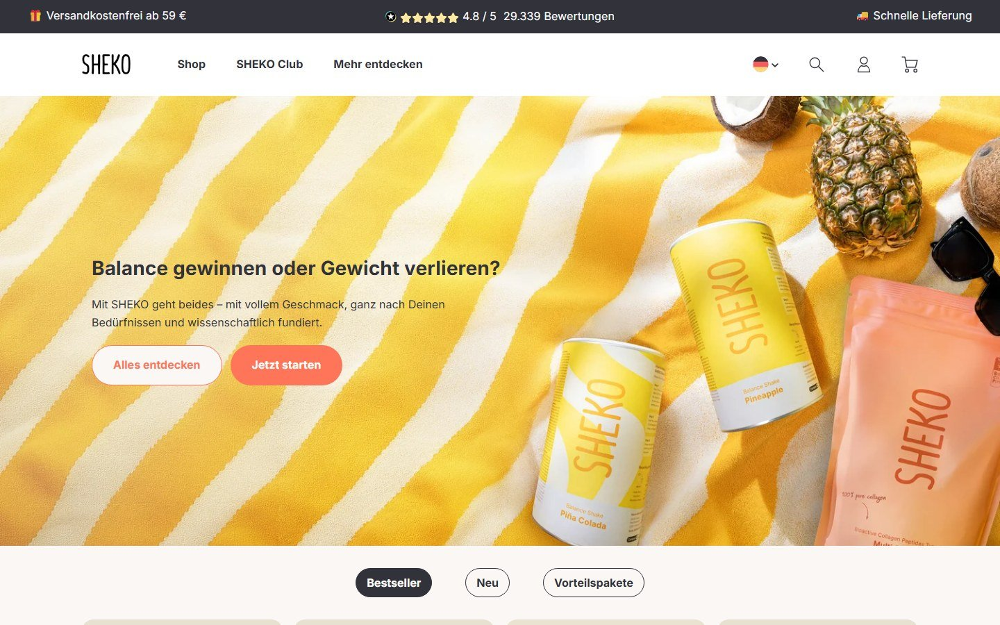
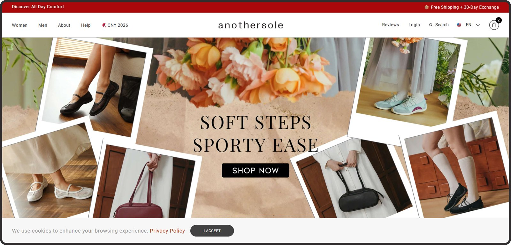
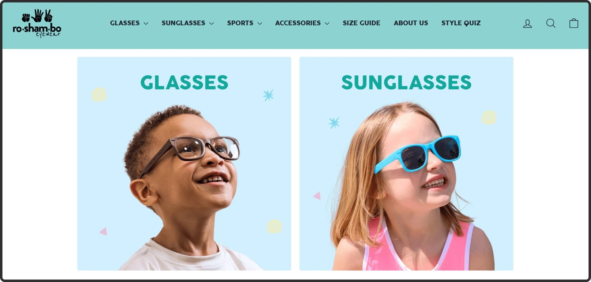
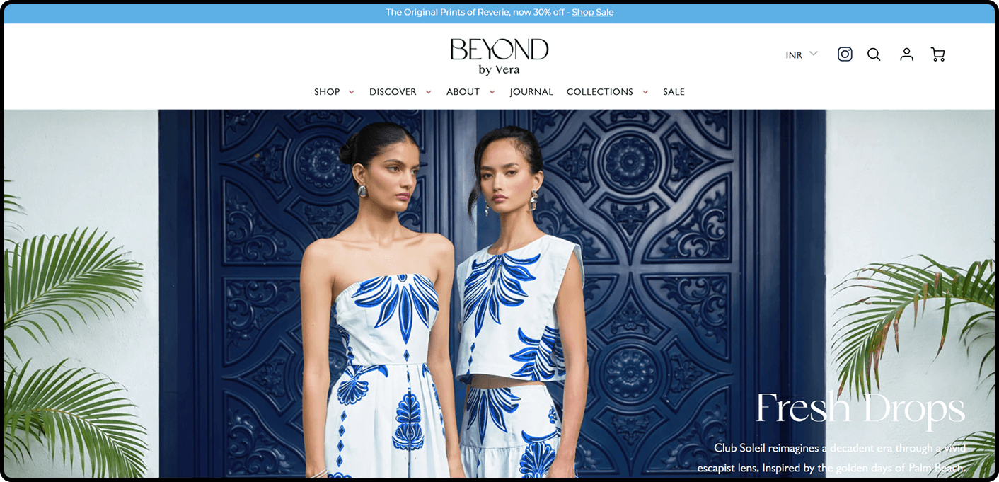
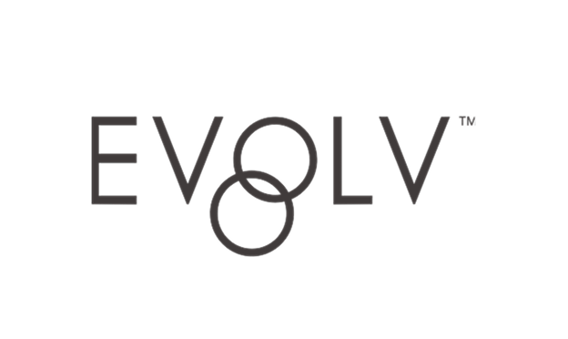
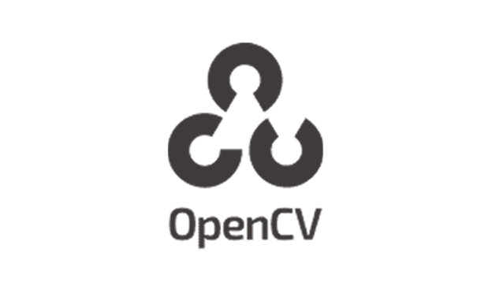
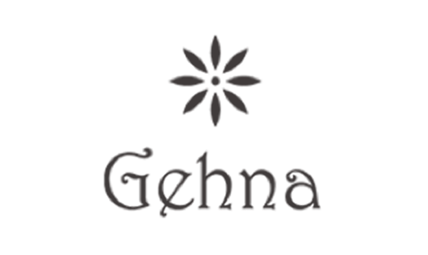

ConvertPolo turns the traffic you already have into more orders. No hunches. No redesign roulette. Every change proven by an A/B test.

The homepage opens on a question, "Balance gewinnen oder Gewicht verlieren?", with two buttons of equal weight. The 11,000,000 meals sold and the 10,000 Starter-Sets in two months only appear after a click. We would test leading with them.
The Starter-Set asks for three separate flavour picks before it can go in the cart, and on a phone the first screen shows no price and no button. A preselected best seller mix with a simple change option is a fast test.
The Starter-Set is a four week program, yet its page shows no subscribe or reorder option, although SHEKO runs subscriptions (Abo verwalten in the footer). Week four is when the customer decides, so the next step belongs on the page.
The secret discount and the 60 page metabolism guide are offered in a block at the very end of the homepage, after the reviews. Testing the same offer higher up and on product pages could turn more of your visitors into a list.
Open with 11,000,000 meals sold and the 4.8 rating, one main button to the Starter-Set.
Preselect the three most popular flavours, put price and button in the first mobile screen.
A reorder or subscribe option on the Starter-Set page, shown before the four weeks run out.
At 386,000 visits a month, every 0.1 point of conversion rate is about 386 more orders a month, from traffic you already have.
No extra ad spend. No new channel. Just more of the people already on the site, buying. What a concept.
ConvertPolo only does conversion. We run the whole experimentation program for e-commerce and D2C brands, from research and hypotheses to design, development, QA and analysis, as an extension of your team.
Analytics, session recordings, voice of customer
Ranked by expected impact and speed
Our designers and developers, not your roadmap
Every test verified before a visitor sees it
Statistical significance, not gut feeling
Winners roll out, learnings feed the next test
You approve. We run everything else, one test after the next. Your roadmap stays yours.






Thirty minutes on sheko.com. We walk you through what we saw and the first three tests we would run, on your real numbers instead of ours.